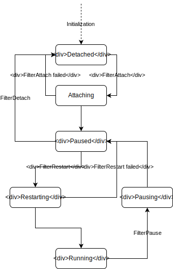

Structure of vRouter code on Windows
This document describes general structure of vRouter code and implementation details of the most important features including dp-core callbacks, driver lifecycle, packet flow, communication channels and structures abstractions.
vRouter structure overview
The vRouter module on Windows is implemented as NDIS modifying filter driver: the Hyper-V Extensible Switch forwarding extension (see NDIS types overview for more details on NDIS driver types).
The implementation consists of:
- OS-independent, generic
dp-coredirectory, where the main logic of packet processing is placed, - header files in
includedirectory, - Windows specific code, including dp-core callback in
windowsdirectory; All OS-dependent callcacks required by dp-core are can be found invr_host.candvr_host_interface.cfiles, - userspace applications used to read and modify the state of vRouter
placed in
utilsdirectory, - unit tests that can be run in userspace, in
test.
Driver lifecycle
Loading the driver
When the driver implementing vRouter logic is loaded, the first function
called by the system is a
DriverEntry
routine, which is responsible for two main things:
-
setting up the pointer to
DriverUnloadroutine which will be called when the driver is unloaded. For more information, see Unloading the driver, -
calling the
NdisFRegisterFilterDriverfunction with a pointer to structure containing driver characteristic which consists of driver names, versions and, the most important, functions called by the system on speciffic conditions. vRouter implements the following sets of functions:-
FilterAttach,FilterDetach,FilterPause,FilterRestart: see more in the Driver states section, -
FilterSendNetBufferLists,FilterSendNetBufferListsComplete: not related to the driver lifecycle, described more precisely in the Packet flow section, -
FilterOidRequest,FilterOidRequestComplete,FilterCancelOidRequest: see Switch parameters and events section, -
FilterNetPnpEvent: see Plug and Play and Power Management events section.
-
Driver states
Filter driver can be in multiple different states. The relationship between them is shown in the diagram below:

After loading by operating system, the driver is in Detached state:
it is detached from the network driver stack. When NDIS calls the
FilterAttach
function, the driver enters Attaching state. If the operation is successful,
the driver enters the Paused state. Otherwise, it returns to Detached state.
The main things done in vRouter's FilterAttach function are:
- allocating switch object containing filter handle, pointers to optional switch handlers and switch context,
- initializing read/write locks, NBL pool and NB pool,
- initializing ksync, pkt0 and shmem devices, sandesh transport, vRouter logic and fragment assembler,
- initializing packet dumping functionality,
- setting global variable containing number of CPUs.
When vRouter is in the Paused state, it does not perform any network
I/O operations. When NDIS calls
FilterRestart
function in this state, the driver enters Restarting state, and after this
operation is complete, it enters the Running state.
When restarting operation fails, the driver returns to Paused state.
When NDIS calls
FilterDetach
in the Paused state, the driver enters Detached state and is detached
from the network driver stack.
The main responsibility of vRouter's FilterRestart function is handling
a scenario when there are no VIFs by implementing single switch logic.
FilterDetach waits for all pending OIDs, stops and uninitializes
fragment assembler, vRouter logic, sandesh transport and ksync,
pkt0 and shmem devices. It also destroys NBL and NB pools and frees all locks.
When vRouter is in Running state, it can perform all network I/O operations.
The driver enters Pausing state when NDIS calls
FilterPause
function. In FilterPause the driver should wait for all pending network
I/O operations and all pending OID requests.
After that it enters Paused state.
Switch parameters and events
The FilterOidRequest,
FilterOidRequestComplete
and
FilterCancelOidRequest
functions are used for handling, processing, filtering and issuing
OID (Object Identifier) requests by the NDIS filter driver.
The adapter parameters described by OID values includes device characteristics,
statistics and configurable settings.
vRouter uses the following set of OID requests:
OID_SWITCH_NIC_CONNECT- for implementing simple switch logic when there are no VIFs in vRouter. This request is issued to notify switch extensions about completely established network connection between extensible switch port and a network adapter.OID_SWITCH_PARAMETERS- vRouter sends this query and implements synchronous waiting routine which waits for response containing configuration data of the extensible switch. It is used for checking if the switch is active.OID_SWITCH_NIC_ARRAY- used by vRouter for obtaining an array of configuration parameters of all network adapters associated with extensible switch port.
Plug and Play and Power Management events
The FilterNetPnpEvent
function is called by NDIS to notify the filter driver about network
Plug and Play and Power Management events that was issued for underlying NIC.
vRouter handles activation of the switch in this function.
Unloading the driver
The DriverUnload
function is called by the NDIS before unloading the driver. It should perform
all operations that are necessary before the system unloads the driver.
The NdisFDeregisterFilterDriver
function should be called from DriverUnload to release all resources
allocated previously in DriverEntry routine. If the driver is in any other
state than Detached, the NdisFDeregisterFilterDriver function waits for
all pending I/O operations and all OID requests and then calls
FilterPause
and FilterDetach
to return to Detached state. In vRouter's case, this order of operation will
cause a deadlock, because all pending network I/O operations are cancelled
in FilterDetach function, but NdisFDeregisterFilterDriver waits for them
to finish before calling FilterDetach. This issue is resolved here by
explicitly freeing some resources and doing necessary deinitializations
in DriverUnload before calling NdisFDeregisterFilterDriver.
Packet flow
Packet flow is described in separate document.
Communication channels
Communication channels between vRouter kernel driver and user space Agent are described in separate document.
Windows structures abstraction
This section describes all structures used in vRouter as an abstrac wrappers around NDIS structures. All of them were introduced to enable easy unit testing of vRouter's Windows specific logic in user space. All of the wrappers described in subsections below have separate, lightweight implementation in user-mode code.
vr_packet
This is a packet representation in system independent dp-core code.
It contains a pointer to the packet data and many other meta-data fields,
like data length, offsets to outer and inner network headers, ttl and flags.
All of the functions in dp-core code assumes that the underlying memory
of packet data that is pointed by vr_packet is continuous.
To meet this requirement, Windows-dependent code of vRouter translates
non-continuous packets to corresponsing continuous representation before
passing the packet to the dp-core
(see more in Packet flow section).
WIN_PACKET
WIN_PACKET is an NDIS-independent logic representation of single
NBL
structure that contains single NB.
It represents single packet in Windows-dependent part of vRouter's code.
WIN_MULTI_PACKET
WIN_MULTI_PACKET is an NDIS-independent logic representation of single
NBL
structure that may contain multiple NBs.
It represents multiple packets received by vRouter from NDIS in single API call.
This packets are then split to WIN_PACKET_LIST containing
multiple WIN_PACKETs.
WIN_PACKET_RAW
WIN_PACKET_RAW is an NDIS-independent logic representation of single
NBL
structure that contains unspecified number of NBs.
Unlike WIN_PACKET and WIN_MULTI_PACKET which are used in the whole
Windows-dependent code, WIN_PACKET_RAW is used in internal WinPacket
layer implementation.
WIN_SUB_PACKET
The WIN_SUB_PACKET structure is an NDIS-independent wrapper around single
NB.
It is used in fragmentation and segmentation code that splits
a packet represented by a single
NBL
with single NB to multiple packets represented by single NBL containing
multiple NBs.
WIN_PACKET_LIST
The WIN_PACKET_LIST is a list of WIN_PACKETs. It is created from
WIN_MULTI_PACKET before sending all packets for processing by dp-core.
VR_PACKET_WRAPPER
The VR_PACKET_WRAPPER is a structure that bounds the vr_packet and
corresponding WIN_PACKET wrapper in a way, that the WIN_PACKET part
is invisible to system independent dp-core code. Every time the vr_packet
has to be allocated, the whole VR_PACKET_WRAPPER is allocated and processed,
and then, before passing to dp-core, the pointer is casted to vr_pakcet.
When the packet returns from dp-core to Windows-dependent code, the pointer
is casted again to VR_PACKET_WRAPPER.